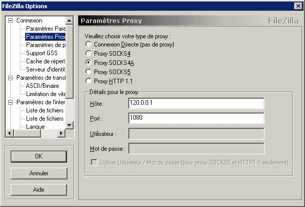

Configuration Proxy
Vue d'ensemble:
En complément au support de Pare-feu, FileZilla supporte aussi les serveurs proxy à base de SOCKS4 et SOCKS5. Paramètrer le serveur proxy est très similaire à la configuration d'un pare-feu.

| Type de Proxy | - | FileZilla supporte les proxy SOCKS4 et SOCKS5. Veuillez sélectionner le type de proxy approprié. Si votre proxy supporte SOCKS4 et SOCKS5, sélectionnez SOCKS5 |
| Hôte | - | L'adresse du proxy |
| Port | - | Le port du proxy |
| Utilisateur | - | Le nom d'utilisateur utilisé pour vous ouvrir une session avec le proxy. Notez que seul le serveur proxy SOCKS5 supporte l'ouverture d'une session. |
| Mot de passe | - | Le mot de passe utilisé pour vous ouvrir une session avec le proxy. Notez que seul le serveur proxy SOCKS5 supporte l'ouverture d'une session. |
| Utiliser Utilisateur / Mot de passe pour proxy SOCKS5 | - | Quand vous utilisez le proxy SOCKS5, il peut nécessiter l'ouverture d'un session. Activez cette case et entrez votre nom d'utilisateur et votre mot de passe dans le champ de texte approprié. |
Contactez votre administrateur système si vous ne connaissez pas l'information requise ou si vous avez des problèmes de connexion avec le proxy SOCKS.